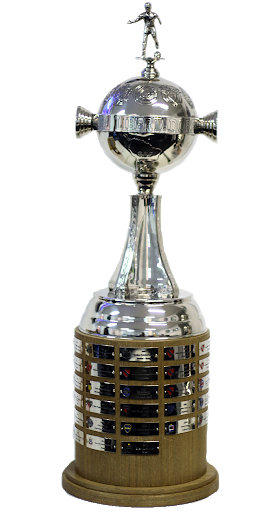
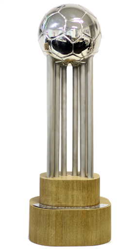
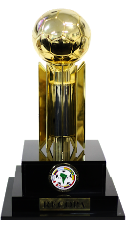
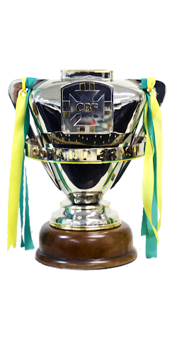
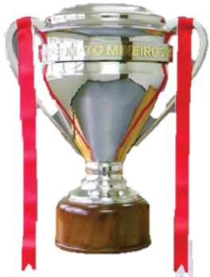

Titulos
 1 Copa Libertadores da América - 2013.
 2 Copa CONMEBOL - 1992 e 1997.
 1 Recopa Sul-Americana - 2014.
 1 Campeonato Brasileiro - 1971.
1 Campeonato Brasileiro - 1971.
 1 Copa do Brasil - 2014.
 45 Campeonatos Mineiro - 1915, 1926, 1927, 1931, 1932, 1936, 1938, 1939, 1941, 1942, 1946, 1947, 1949, 1950, 1952, 1953, 1954, 1955, 1956, 1958, 1962, 1963, 1970, 1976, 1978, 1979, 1980, 1981, 1982, 1983, 1985, 1986, 1988, 1989, 1991, 1995, 1999, 2000, 2007, 2010, 2012, 2013, 2015, 2017 e 2020.